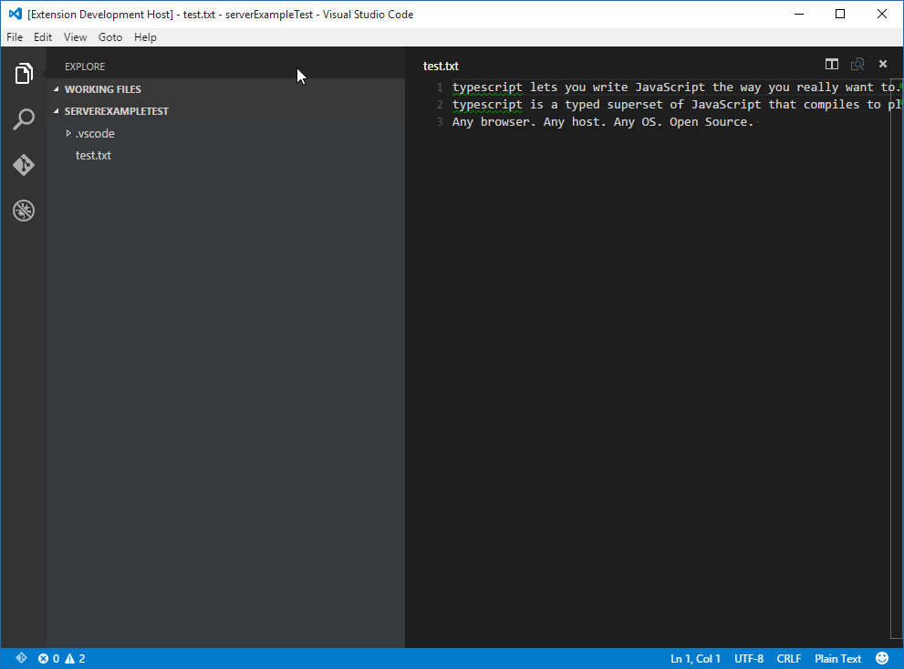
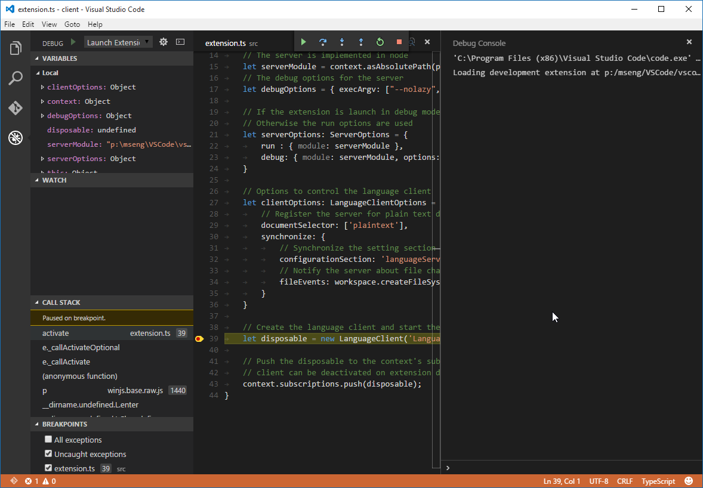
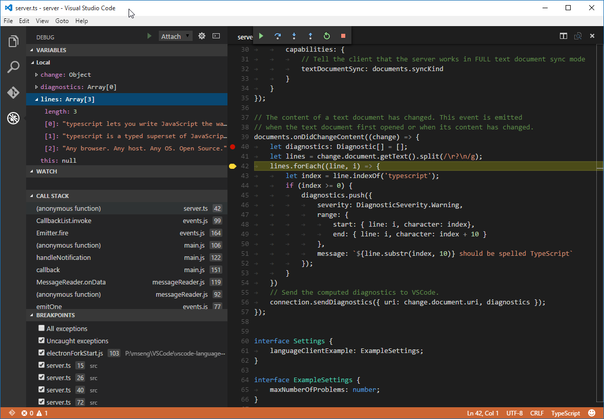
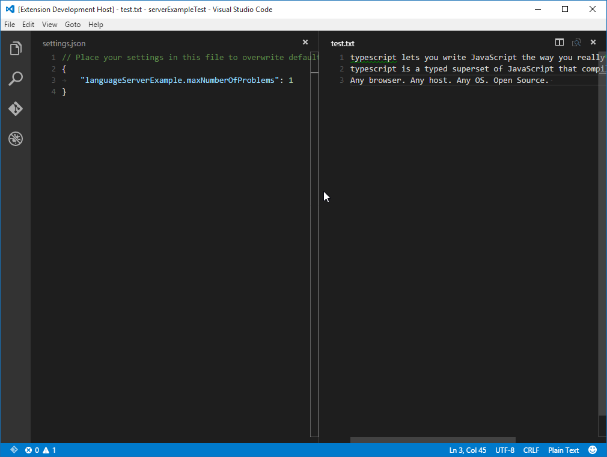
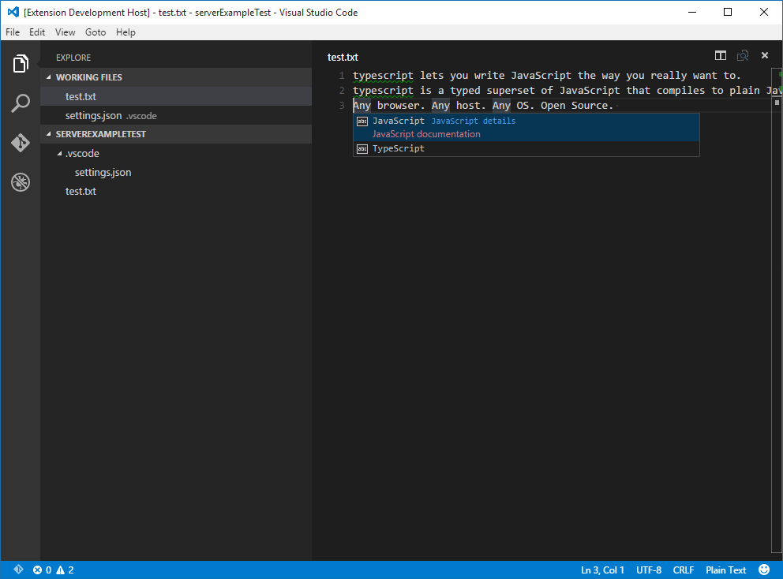

示例 - 语言服务 Example - Language Server
语言服务允许你针对VS Code打开的文件添加一个的验证逻辑。最典型的一个应用是检查编程语言的语法。However validating other file types is useful as well. A language server could, for example, check files for inappropriate language.
通常校检查程语言的代价非常高，尤其是当检查动作需要解析多个文件并且建立抽象的语法树。为了避免性能问题，语言服务运行在一个单独的进程。这个特性也让使用除TypeScript/JavaScript之外的语言编写语言服务成为可能，这可以支持一些很耗费性能的操作，例如代码自动完成或者查找所用引用。
这篇文章假定你熟悉正常的VS Code插件开发。
Language servers allow you to add your own validation logic to files open in VS Code. Typically you just validate programming languages. However validating other file types is useful as well. A language server could, for example, check files for inappropriate language.
In general, validating programming language can be expensive. Especially when validation requires parsing multiple files and building up abstract syntax trees. To avoid that performance cost, language servers in VS Code are executed in a separate process. This architecture also makes it possible that language servers can be written in other languages besides TypeScript/JavaScript and that they can support expensive additional language features like code completion or Find All References.
The remaining document assumes that you are familiar with normal extension development for VS Code.
实现你自己的语言服务 Implement your own Language Server
理论上语言服务可以使用任何语言实现，然而现在VS Code只提供Node.js的库。未来将提供其他语言的库。一个使用Node.js语言实现的服务例子是这个示例仓库Node语言服务示例。
克隆这个仓库然后执行如下命令：
> cd client
> npm install
> code .
> cd ../server
> npm install
> code .
Language servers can be implemented in any language. However, right now VS Code only provides libraries for Node.js. Additional libraries will follow in the future. A good starting point for a language server implementation in Node.js is the example repository Language Server Node Example.
Clone the repository and then do:
> cd client
> npm install
> code .
> cd ../server
> npm install
> code .
‘客户端’解析 Explaining the 'Client'
这个客户端实际上就是一个正常的VS Code插件。它的工作空间根目录包含package.json文件。这个文件有3个值得注意的节。
首先来看activationEvents:
"activationEvents": [
"onLanguage:plaintext"
]
这个节告诉VS Code当纯文本文件被打开时激活这个插件(例如后缀名为.txt的文件).
接下来看configuration节:
"configuration": {
"type": "object",
"title": "Example configuration",
"properties": {
"languageServerExample.maxNumberOfProblems": {
"type": "number",
"default": 100,
"description": "Controls the maximum number of problems produced by the server."
}
}
}
这个扩展节是configurationVS Code的配置。这个例子将解析这些设置是怎样在每次配置改变和语言服务启动时发送给语言服务的。
最后一部分添加了一个vscode-languageclient库的依赖：
"dependencies": {
"vscode-languageclient": "^1.4.2"
}
如同上面提到的，这个客户端就是一个普通的VS Code插件。
下面就是相应的extension.ts文件内容：
/* --------------------------------------------------------------------------------------------
* Copyright (c) Microsoft Corporation. All rights reserved.
* Licensed under the MIT License. See License.txt in the project root for license information.
* ------------------------------------------------------------------------------------------ */
'use strict';
import * as path from 'path';
import { workspace, Disposable, ExtensionContext } from 'vscode';
import { LanguageClient, LanguageClientOptions, SettingMonitor, ServerOptions } from 'vscode-languageclient';
export function activate(context: ExtensionContext) {
// 服务使用nodejs实现
let serverModule = context.asAbsolutePath(path.join('server', 'server.js'));
// 服务的调试选项
let debugOptions = { execArgv: ["--nolazy", "--debug=6004"] };
// 服务的调试选项将在插件以调试模式启动的情况下生效
// 运行选项将在其他情况下生效
let serverOptions: ServerOptions = {
run : { module: serverModule, transport: TransportKind.ipc },
debug: { module: serverModule, transport: TransportKind.ipc, options: debugOptions }
}
// 控制语言客户端的选项
let clientOptions: LanguageClientOptions = {
// 为纯文本文档注册服务
documentSelector: ['plaintext'],
synchronize: {
// 将'languageServerExample'选项同步到服务
configurationSection: 'languageServerExample',
// 当工作空间中的'.clientrc'文件改变时通知服务
fileEvents: workspace.createFileSystemWatcher('**/.clientrc')
}
}
// 创建一个语言客户端并启动这个客户端。
let disposable = new LanguageClient('Language Server Example', serverOptions, clientOptions).start();
// 向context的订阅里插入一个disposable对象使的客户端可以在插件
// 关闭的时候被销毁
context.subscriptions.push(disposable);
}
The client is actually a normal VS Code extension. It contains a package.json file in the root of the workspace folder. There are three interesting sections of that file.
First look the activationEvents:
"activationEvents": [
"onLanguage:plaintext"
]
This section tells VS Code to activate the extension as soon as a plain text file is opened (e.g. a file with the extension .txt).
Next look at the configuration section:
"configuration": {
"type": "object",
"title": "Example configuration",
"properties": {
"languageServerExample.maxNumberOfProblems": {
"type": "number",
"default": 100,
"description": "Controls the maximum number of problems produced by the server."
}
}
}
This section contributes configuration settings to VS Code. The example will explain how these settings are sent over to the language server on startup and on every change of the settings.
The last part adds a dependency to the vscode-languageclient library:
"dependencies": {
"vscode-languageclient": "^1.4.2"
}
As mentioned, the client is implemented as a normal VS Code extension.
Below is the content of the corresponding extension.ts file:
/* --------------------------------------------------------------------------------------------
* Copyright (c) Microsoft Corporation. All rights reserved.
* Licensed under the MIT License. See License.txt in the project root for license information.
* ------------------------------------------------------------------------------------------ */
'use strict';
import * as path from 'path';
import { workspace, Disposable, ExtensionContext } from 'vscode';
import { LanguageClient, LanguageClientOptions, SettingMonitor, ServerOptions } from 'vscode-languageclient';
export function activate(context: ExtensionContext) {
// The server is implemented in node
let serverModule = context.asAbsolutePath(path.join('server', 'server.js'));
// The debug options for the server
let debugOptions = { execArgv: ["--nolazy", "--debug=6004"] };
// If the extension is launch in debug mode the debug server options are use
// Otherwise the run options are used
let serverOptions: ServerOptions = {
run : { module: serverModule, transport: TransportKind.ipc },
debug: { module: serverModule, transport: TransportKind.ipc, options: debugOptions }
}
// Options to control the language client
let clientOptions: LanguageClientOptions = {
// Register the server for plain text documents
documentSelector: ['plaintext'],
synchronize: {
// Synchronize the setting section 'languageServerExample' to the server
configurationSection: 'languageServerExample',
// Notify the server about file changes to '.clientrc files contain in the workspace
fileEvents: workspace.createFileSystemWatcher('**/.clientrc')
}
}
// Create the language client and start the client.
let disposable = new LanguageClient('Language Server Example', serverOptions, clientOptions).start();
// Push the disposable to the context's subscriptions so that the
// client can be deactivated on extension deactivation
context.subscriptions.push(disposable);
}
'服务'解析 Explaining the 'Server'
在这个例子里，服务也使用TypeScript语言实现并使用Node.js执行。因为VS Code已经提供了Node.js运行时，不需要你自己再提供，除非你对运行时有特殊的要求。
在服务的package.json文件中我们感兴趣的的节是这个：
"dependencies": {
"vscode-languageserver": "^1.4.1"
}
这将拉取vscode-languageserver库。
下面的代码是一个服务实现，这个服务实现了一个通过VS Code发送过全部文本内容来同步文档的简单的文本文档管理器。
/* --------------------------------------------------------------------------------------------
* Copyright (c) Microsoft Corporation. All rights reserved.
* Licensed under the MIT License. See License.txt in the project root for license information.
* ------------------------------------------------------------------------------------------ */
'use strict';
import {
createConnection, IConnection,
TextDocuments, ITextDocument, Diagnostic,
InitializeParams, InitializeResult
} from 'vscode-languageserver';
// 创建一个服务的连接，连接使用Node的IPC作为传输
let connection: IConnection = createConnection(new IPCMessageReader(process), new IPCMessageWriter(process));
// 创建一个简单的文本文档管理器，这个管理器仅仅支持同步所有文档
let documents: TextDocuments = new TextDocuments();
// 让文本文档管理器在连接上监听文本文档的打开、改变、关闭事件
documents.listen(connection);
// 在服务启动后，客户端发送初始化请求。服务收到的参数中包含工作空间的根目录和客户端的能力。
let workspaceRoot: string;
connection.onInitialize((params): InitializeResult => {
workspaceRoot = params.rootPath;
return {
capabilities: {
// 告诉客户端服务工作在全文本文档同步模式
textDocumentSync: documents.syncKind
}
}
});
// 监听连接
connection.listen();
In the example, the server is also implemented in TypeScript and executed using Node.js. Since VS Code already ships with a Node.js runtime, there is no need to provide your own, unless you have very specific requirements for the runtime.
The interesting section in the server's package.json file is:
"dependencies": {
"vscode-languageserver": "^1.4.1"
}
This pulls in the vscode-languageserver library.
Below is a server implementation that uses the provided simple text document manager which synchronizes text documents by always sending the file's full content from VS Code to the server.
/* --------------------------------------------------------------------------------------------
* Copyright (c) Microsoft Corporation. All rights reserved.
* Licensed under the MIT License. See License.txt in the project root for license information.
* ------------------------------------------------------------------------------------------ */
'use strict';
import {
createConnection, IConnection,
TextDocuments, ITextDocument, Diagnostic,
InitializeParams, InitializeResult
} from 'vscode-languageserver';
// Create a connection for the server. The connection uses Node's IPC as a transport
let connection: IConnection = createConnection(new IPCMessageReader(process), new IPCMessageWriter(process));
// Create a simple text document manager. The text document manager
// supports full document sync only
let documents: TextDocuments = new TextDocuments();
// Make the text document manager listen on the connection
// for open, change and close text document events
documents.listen(connection);
// After the server has started the client sends an initilize request. The server receives
// in the passed params the rootPath of the workspace plus the client capabilites.
let workspaceRoot: string;
connection.onInitialize((params): InitializeResult => {
workspaceRoot = params.rootPath;
return {
capabilities: {
// Tell the client that the server works in FULL text document sync mode
textDocumentSync: documents.syncKind
}
}
});
// Listen on the connection
connection.listen();
完成一个简单的校验器 Adding a Simple Validation
想完成一个文档校验器，我们只需要简单的添加文本文档管理器的监听器去监听文本文档的改变。它会在最适合校验文档的时机通知服务。在这个实例实现里，服务校验纯文本文档并且通过消息拼写为TypeScript来标记所有的typescript文字。代码片段如下：
// The content of a text document has changed. This event is emitted
// when the text document first opened or when its content has changed.
documents.onDidChangeContent((change) => {
let diagnostics: Diagnostic[] = [];
let lines = change.document.getText().split(/\r?\n/g);
lines.forEach((line, i) => {
let index = line.indexOf('typescript');
if (index >= 0) {
diagnostics.push({
severity: DiagnosticSeverity.Warning,
range: {
start: { line: i, character: index},
end: { line: i, character: index + 10 }
},
message: `${line.substr(index, 10)} should be spelled TypeScript`,
source: 'ex'
});
}
})
// Send the computed diagnostics to VS Code.
connection.sendDiagnostics({ uri: change.document.uri, diagnostics });
});
To add document validation to the server, we simply add a listener to the text document manager that gets called whenever the content of a text document changes. It is then up to the server to decide when the best time is to validate a document. In the example implementation, the server validates the plain text document and flags all occurrences of typescript with a message to spell it TypeScript. The corresponding code snippet looks like this:
// The content of a text document has changed. This event is emitted
// when the text document first opened or when its content has changed.
documents.onDidChangeContent((change) => {
let diagnostics: Diagnostic[] = [];
let lines = change.document.getText().split(/\r?\n/g);
lines.forEach((line, i) => {
let index = line.indexOf('typescript');
if (index >= 0) {
diagnostics.push({
severity: DiagnosticSeverity.Warning,
range: {
start: { line: i, character: index},
end: { line: i, character: index + 10 }
},
message: `${line.substr(index, 10)} should be spelled TypeScript`,
source: 'ex'
});
}
})
// Send the computed diagnostics to VS Code.
connection.sendDiagnostics({ uri: change.document.uri, diagnostics });
});
诊断提示和窍门 Diagnostics Tips and Tricks!
- 如果开始和结束位置相同，VS Code将在这个单词de的位置画曲线
- 如果你想画曲线一直到行尾，设置结束位置的字符为Number.MAX_VALUE。
向下面这样测试语言服务：
- 到包含服务代码（见上文）的VS Code的实例中并且按下
kb(workbench.action.tasks.build)启动构建任务。任务将编译服务代码并且安装服务到插件目录。 - 现在会带有客户端插件的VS Code实例中并且按下
kb(workbench.action.debug.start)启动扩展开发主机VS Code实例执行插件代码。 - 在根目录创建一个test.txt文件并且粘贴如下内容：
typescript lets you write JavaScript the way you really want to.
typescript is a typed superset of JavaScript that compiles to plain JavaScript.
Any browser. Any host. Any OS. Open Source.
扩展开发主机实例将看起来如下图这样

- If the start and end positions are the same, VS Code will squiggle the word at that position.
- If you want to squiggle until the end of the line, then set the character of the end position to Number.MAX_VALUE.
To test the language server do the following:
- Go to the VS Code instance containing the server code (see above) and press
kb(workbench.action.tasks.build)to start the build task. The task compiles the server code and installs (e.g. copies) it into the extension folder. - Now go back to the VS Code instance with the extension (client) and press
kb(workbench.action.debug.start)to launch an additionalExtension Development Hostinstance of VS Code that executes the extension code. - Create a test.txt file in the root folder and paste the following content:
typescript lets you write JavaScript the way you really want to.
typescript is a typed superset of JavaScript that compiles to plain JavaScript.
Any browser. Any host. Any OS. Open Source.
The Extension Development Host instance will then look like this:
一起调试客户端和服务 Debugging both Client and Server
调试客户端代码就像调试普通插件一样简单。在包含客户端代码的VS Code实例中简单的设置断点然后按下kb(workbench.action.debug.start)调试插件。关于启动和调试插件的详细描述请看运行和调试你的插件。

因为服务是被在客户端中运行LanguageClient启动的。我们需要附加到运行中的服务去调试。要完成这一切，切换到服务代码的VS Code实例中并且按下kb(workbench.action.debug.start)。这将附加一个调试器到服务中。然后使用正常的调试视图调试即可。

Debugging the client code is as easy as debugging a normal extension. Simply set a breakpoint in the VS Code instance that contains the client code and debug the extension by pressing kb(workbench.action.debug.start). For a detailed description about launching and debugging an extension see Running and Debugging Your Extension.
Since the server is started by the LanguageClient running in the extension (client), we need to attach a debugger to the running server. To do so, switch to the VS Code instance containing the server code and press kb(workbench.action.debug.start). This will attach the debugger to the server. Use the normal Debug View to interact with the running server.
在服务中使用设置选项 Using Configuration Settings in the Server
当我们编写已经定义了最大问题数设置的插件的客户端部分时，我们可以用同步选项让LanguageClient对象去同步这些设置到服务端。
synchronize: {
// 将'languageServerExample'选项同步到服务
configurationSection: 'languageServerExample',
// 当工作空间中的'.clientrc'文件改变时通知服务
fileEvents: workspace.createFileSystemWatcher('**/.clientrc')
}
现在我们唯一需要做的就是在服务端监听设置改变并且如果有设置改变就对打开的文本文档重新生效。为了重用文档改变事件处理的逻辑，我们提取这部分代码到validateTextDocument函数中并且添加添加maxNumberOfProblems变量：
function validateTextDocument(textDocument: ITextDocument): void {
let diagnostics: Diagnostic[] = [];
let lines = textDocument.getText().split(/\r?\n/g);
let problems = 0;
for (var i = 0; i < lines.length && problems < maxNumberOfProblems; i++) {
let line = lines[i];
let index = line.indexOf('typescript');
if (index >= 0) {
problems++;
diagnostics.push({
severity: DiagnosticSeverity.Warning,
range: {
start: { line: i, character: index},
end: { line: i, character: index + 10 }
},
message: `${line.substr(index, 10)} should be spelled TypeScript`
});
}
}
// 发送诊断信息到VS Code.
connection.sendDiagnostics({ uri: textDocument.uri, diagnostics });
}
通过向连接添加配置改变通知处理器来处理配置变化的处理。相应的代码如下：
// 设置接口描述了服务相关的设置部分
interface Settings {
languageServerExample: ExampleSettings;
}
// 这些是我们在客户端的package.json文件中定义的设置示例
interface ExampleSettings {
maxNumberOfProblems: number;
}
// 控制最大问题数设置
let maxNumberOfProblems: number;
// 设置改变，也发送服务器激活
connection.onDidChangeConfiguration((change) => {
let settings = <Settings>change.settings;
maxNumberOfProblems = settings.languageServerExample.maxNumberOfProblems || 100;
// 验证所有打开的文档
documents.all().forEach(validateTextDocument);
});
修改最大报告问题数为1个并再次启动客户端的结果：

When writing the client part of the extension we already defined a setting to control the maximum numbers of problems reported. We also instructed the LanguageClient to sync these settings to the server using the syncronization configuration
synchronize: {
// Synchronize the setting section 'languageClientExample' to the server
configurationSection: 'languageServerExample',
// Notify the server about file changes to '.clientrc files contain in the workspace
fileEvents: workspace.createFileSystemWatcher('**/.clientrc')
}
The only thing we need to do now is to listen to configuration changes on the server side and if a settings changes revalidate the open text documents. To be able to reuse the validate logic of the document change event handling we extract the code into a validateTextDocument function and modify the code to honor a maxNumberOfProblems variable:
function validateTextDocument(textDocument: ITextDocument): void {
let diagnostics: Diagnostic[] = [];
let lines = textDocument.getText().split(/\r?\n/g);
let problems = 0;
for (var i = 0; i < lines.length && problems < maxNumberOfProblems; i++) {
let line = lines[i];
let index = line.indexOf('typescript');
if (index >= 0) {
problems++;
diagnostics.push({
severity: DiagnosticSeverity.Warning,
range: {
start: { line: i, character: index},
end: { line: i, character: index + 10 }
},
message: `${line.substr(index, 10)} should be spelled TypeScript`
});
}
}
// Send the computed diagnostics to VS Code.
connection.sendDiagnostics({ uri: textDocument.uri, diagnostics });
}
The handling of the configuration change is done by adding a notification handler for configuration changes to the connection. The corresponding code looks like this:
// The settings interface describe the server relevant settings part
interface Settings {
languageServerExample: ExampleSettings;
}
// These are the example settings we defined in the client's package.json
// file
interface ExampleSettings {
maxNumberOfProblems: number;
}
// hold the maxNumberOfProblems setting
let maxNumberOfProblems: number;
// The settings have changed. Is send on server activation
// as well.
connection.onDidChangeConfiguration((change) => {
let settings = <Settings>change.settings;
maxNumberOfProblems = settings.languageServerExample.maxNumberOfProblems || 100;
// Revalidate any open text documents
documents.all().forEach(validateTextDocument);
});
Starting the client again and changing the setting to maximum report 1 problem results in the following validation:
添加额外的语言特性 Adding additional Language Features
第一个有趣的特性是，语言服务通常实现的功能都是校验文档。甚至感觉语法检查器就是语言服务，因为在VS Code中语法检查器通常都是作为语言服务来实现的(参考 eslint 和 jshint 例子)。但是实际上有更多的语言服务，提供代码自动完成，查找所有引用或者跳转到定义的功能。下面的代码给服务添加了代码自动完成。它简单的提名两个单词'TypeScript'和'JavaScript'。
// 这个处理器提供完成项的初始化列表。
connection.onCompletion((textDocumentPosition: TextDocumentIdentifier): CompletionItem[] => {
// 传递的参数中包含了在文本文档中请求代码自动完成的位置。
// 这个例子中忽略了这些信息，总是提供相同的完成选项。
return [
{
label: 'TypeScript',
kind: CompletionItemKind.Text,
data: 1
},
{
label: 'JavaScript',
kind: CompletionItemKind.Text,
data: 2
}
]
});
// 这个处理器解析了在自动完成列表里选择的选项的额外信息。
connection.onCompletionResolve((item: CompletionItem): CompletionItem => {
if (item.data === 1) {
item.detail = 'TypeScript details',
item.documentation = 'TypeScript documentation'
} else if (item.data === 2) {
item.detail = 'JavaScript details',
item.documentation = 'JavaScript documentation'
}
return item;
});
在解析处理器中data成员通常用来作为自动完成选项的唯一标识符。这个数据属性通过协议来传输。因为底层的消息传输协议是基于数据成员的JSON，所以应该保证数据可以使用JSON序列化和反序列化。
剩下的就是告诉VS Code服务支持代码自动完成。要完成这个功能，需要在初始化处理器中声明相应的能力：
connection.onInitialize((params): InitializeResult => {
...
return {
capabilities: {
...
// 告诉客户端服务支持代码自动完成
completionProvider: {
resolveProvider: true
}
}
}
});
下面的屏幕截图显示纯文本文件中运行的代码完成：

The first interesting feature a language server usually implements is validation of documents. In that sense even a linter counts as a language server and in VS Code linters are usually implemented as language servers (see eslint and jshint for examples). But there is more to language servers. They can provide code complete, find all references or goto definition. The example code below adds code completion to the server. It simply proposes the two words 'TypeScript' and 'JavaScript'.
// This handler provides the initial list of the completion items.
connection.onCompletion((textDocumentPosition: TextDocumentIdentifier): CompletionItem[] => {
// The pass parameter contains the position of the text document in
// which code complete got requested. For the example we ignore this
// info and always provide the same completion items.
return [
{
label: 'TypeScript',
kind: CompletionItemKind.Text,
data: 1
},
{
label: 'JavaScript',
kind: CompletionItemKind.Text,
data: 2
}
]
});
// This handler resolve additional information for the item selected in
// the completion list.
connection.onCompletionResolve((item: CompletionItem): CompletionItem => {
if (item.data === 1) {
item.detail = 'TypeScript details',
item.documentation = 'TypeScript documentation'
} else if (item.data === 2) {
item.detail = 'JavaScript details',
item.documentation = 'JavaScript documentation'
}
return item;
});
The data fields is used to uniquely identify a completion item in the resolve handler. The data property is transparent for the protocol. Since the underlying message passing protocol is JSON based the data field should only hold data that is serializable to and from JSON.
All that is missing is to tell VS Code that the server support code completion requests. To do so, flag the corresponding capability in the intialize handler:
connection.onInitialize((params): InitializeResult => {
...
return {
capabilities: {
...
// Tell the client that the server support code complete
completionProvider: {
resolveProvider: true
}
}
}
});
The screen shot below shows the completed code running on a plain text file:
Additional Language Server features
下面的来的语言特性是语言服务现在支持的除代码完成以外的特性：
- Document Highlights: 高亮显示所有在文本文档中相同的符号。
- Hover: 提供在文本文档中选择的符号的悬停信息。
- Signature Help: 提供在文本文档中选择的符号的签名信息。
- Goto Definition: 提供跳转到文本文档中选择的符号的定义处支持。
- Find References: 提供查找文本文档中选择的符号在所有项目中的引用。
- List Document Symbols: 列出文本文档中定义的所有符号。
- List Workspace Symbols: 列出所有项目中的符号。
- Code Actions: 对给出的文本文档和范围执行命令。
- CodeLens: 对给出的文本文档计算代码元信息统计。
- Document Formatting: 包括格式化整个文档、文档范围、和类型格式化。
- Rename: 在项目内重命名符号。
The following language features are currently support in a language server besides code complete:
- Document Highlights: highlights all 'equal' symbols in a text document.
- Hover: provides hover information for a symbol selected in a text document.
- Signature Help: provides signature help for a symbol selected in a text document.
- Goto Definition: provides goto definition support for a symbol selected in a text document.
- Find References: finds all project-wide references for a symbol selected in a text document.
- List Document Symbols: lists all symbols defined in a text document.
- List Workspace Symbols: lists all project-wide symbols.
- Code Actions: compute commands for a given text document and range.
- CodeLens: compute CodeLens statistics for a given text document.
- Document Formatting: this includes formatting of whole documents, document ranges and formatting on type.
- Rename: project-wide rename of a symbol.
增量同步文本文档 Incremental Text Document Synchronization
示例中通过vscode-languageserver模块提供的简单的文本文档管理器在VS Code和语言服务间同步文档。有两个缺点：
- 因为整个文本文档内容被重复发送给服务造成大量数据传输。
- 如果使用了语言库，很多库支持增量文档更新以避免非必须的解析和虚拟语法树创建。
因为协议也支持增量文档同步。使用增量文档同步需要安装三个通知处理器：
- onDidOpenTextDocument: 当文档在VS Code中被打开时调用。
- onDidChangeTextDocument: 当文档内容在VS Code中被修改时调用。
- onDidCloseTextDocument: 当文档在VS Code中被关闭时调用。
下面的代码片段将说明怎样在连接上安装这些通知处理器并且在初始化里返回正确的能力声明：
connection.onInitialize((params): InitializeResult => {
...
return {
capabilities: {
// 启用增量文档同步
textDocumentSync: TextDocumentSyncKind.Incremental,
...
}
}
});
connection.onDidOpenTextDocument((params) => {
// 一个文档在VS Code中被打开。
// params.uri 唯一标识一个文档。对于存储在磁盘上的文档这是文件URI。
// params.text 文档的全部初始化内容。
});
connection.onDidChangeTextDocument((params) => {
// 文档内容在VS Code中被修改。
// params.uri 唯一标识一个文档。
// params.contentChanges 描述文档的内容变化。
});
connection.onDidCloseTextDocument((params) => {
// 一个文档在VS Code中被关闭。
// params.uri 唯一标识一个文档。
});
The example uses the simple text document manager provided by the vscode-languageserver module to synchronize documents between VS Code and the language server. This has two drawbacks:
- lots of data transfer since the whole content of a text document is sent to the server repeatedly.
- if an existing language library is used, such libraries usually support incremental document updates to avoid unnecessary parsing and abstract syntax tree creation.
The protocol therefore supports incremental document synchronization as well. To make use of incremental document synchronization a server needs to install three notification handlers:
- onDidOpenTextDocument: is called when a text document got opened in VS Code.
- onDidChangeTextDocument: is called when the content of a text document changes in VS Code.
- onDidCloseTextDocument: is called when a text document got closed in VS Code.
Below a code snippet that illustrates how to hook these notification handlers on a connection and how to return the right capability on initialize:
connection.onInitialize((params): InitializeResult => {
...
return {
capabilities: {
// Enable incremental document sync
textDocumentSync: TextDocumentSyncKind.Incremental,
...
}
}
});
connection.onDidOpenTextDocument((params) => {
// A text document got opened in VS Code.
// params.uri uniquely identifies the document. For documents store on disk this is a file URI.
// params.text the initial full content of the document.
});
connection.onDidChangeTextDocument((params) => {
// The content of a text document did change in VS Code.
// params.uri uniquely identifies the document.
// params.contentChanges describe the content changes to the document.
});
connection.onDidCloseTextDocument((params) => {
// A text document got closed in VS Code.
// params.uri uniquely identifies the document.
});
下一步 Next Steps
向学习更多的VS COde插件模型，试试阅读这些文档：
- vscode API Reference - 学习VS Code语言服务和语言的深度整合。
To learn more about VS Code extensibility model, try these topic:
- vscode API Reference - Learn about deep language integration with VS Code language services.
常见问题 Common Questions
问: 当我尝试去附加到服务时，我遇到"cannot connect to runtime process (timeout after 5000ms)"?
答: 如果你的服务没有正在运行那么当你试图去附加调试器时就会看到超时错误。客户端启动夫妇，所以为了拥有一个已经运行的服务，确保你已经启动客户端。
Q: When I try to attach to the server, I get "cannot connect to runtime process (timeout after 5000ms)"?
A: You will see this timeout error if the server isn't running when you try to attach the debugger. The client starts the language server so make sure you have started the client in order to have a running server.